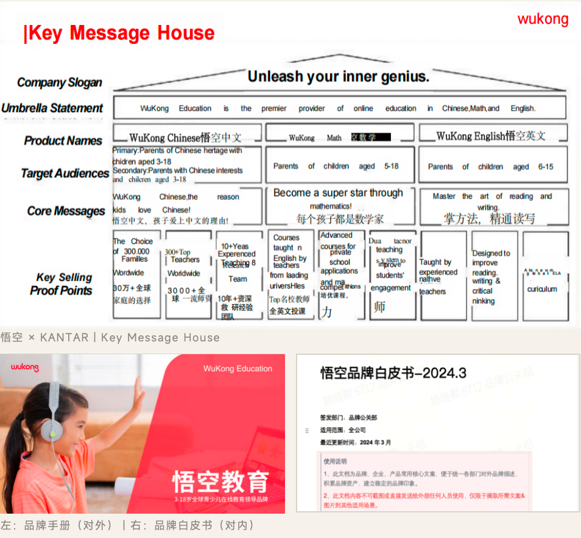
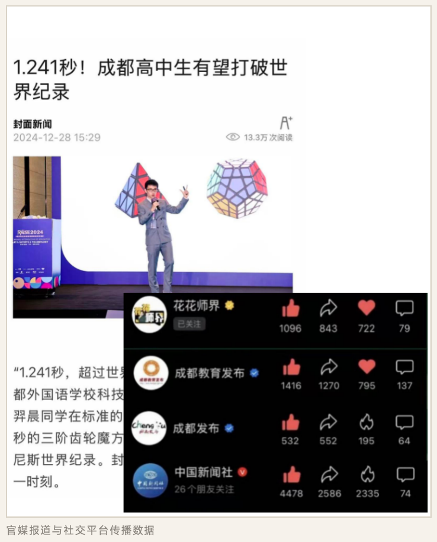
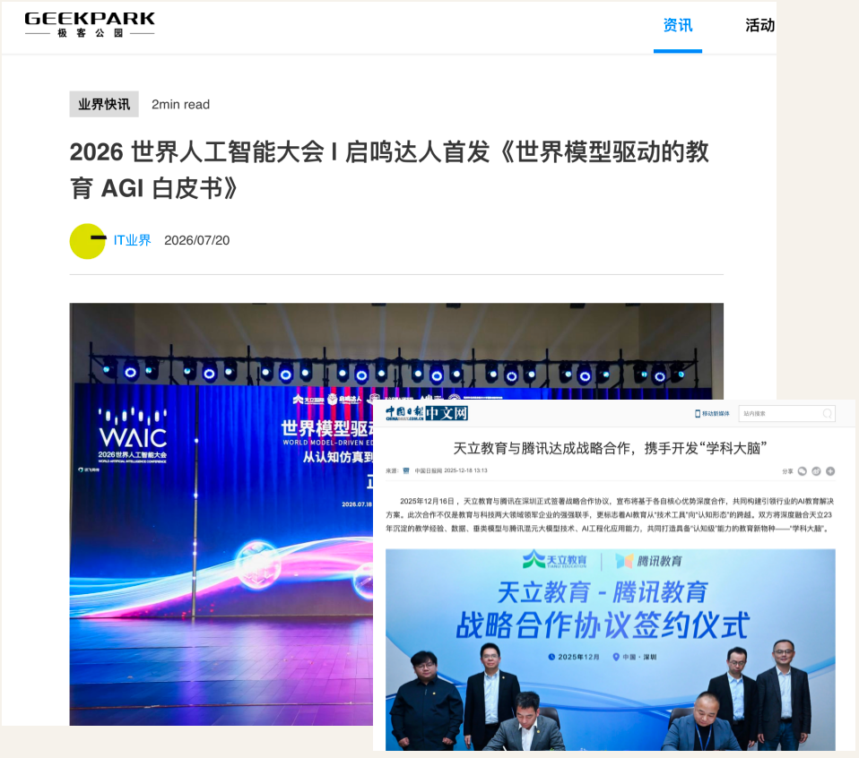
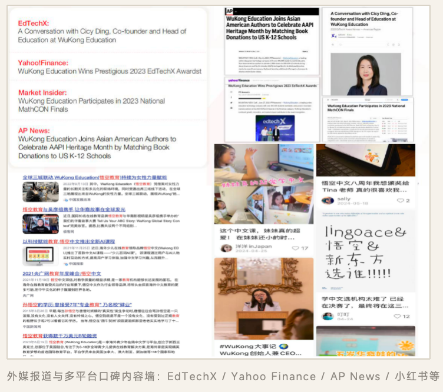
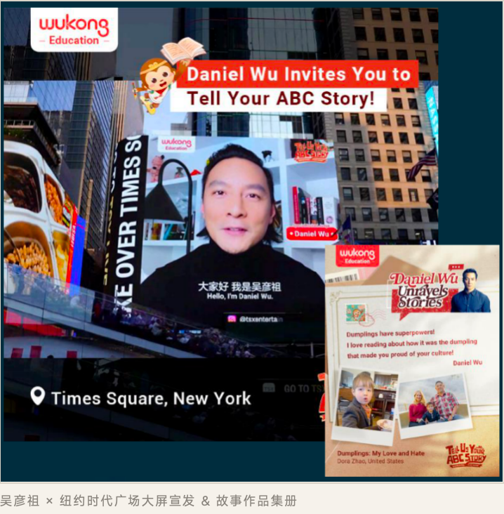
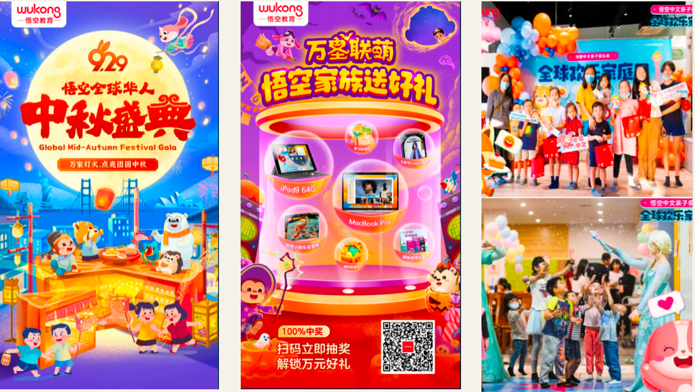
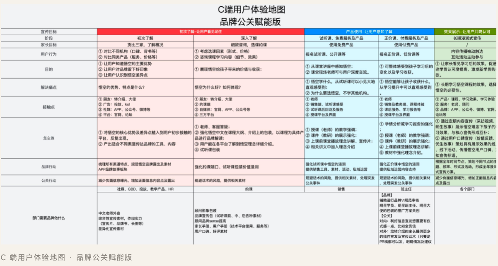
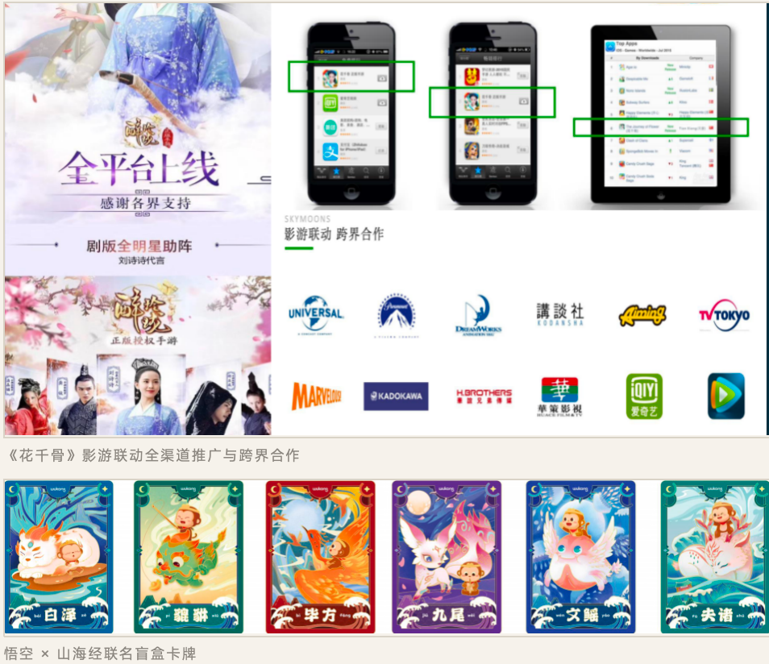
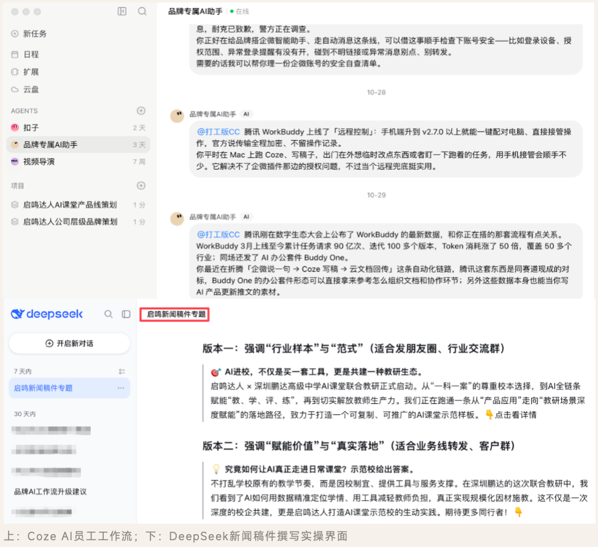

从战略翻译到增长落地——一套完整的品牌实战方法论
品牌定位与话语体系 / 视觉识别 / AI科技品牌跃迁
融资PR全周期 / 媒体矩阵与声誉 / 官媒联动事件
现象级出海 / 节庆营销与增长 / 用户体验全链路
破圈跨界与资源 / AI工具重塑工作流与GEO









姚晓熙 Cecilia
求职岗位：品牌公关 / 品牌总监
📞 15928166712 | ✉️ 175899535@qq.com | 📍 成都